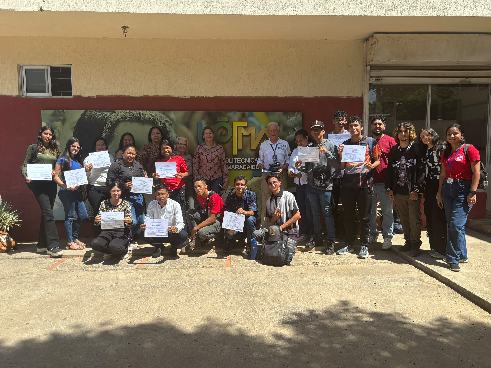
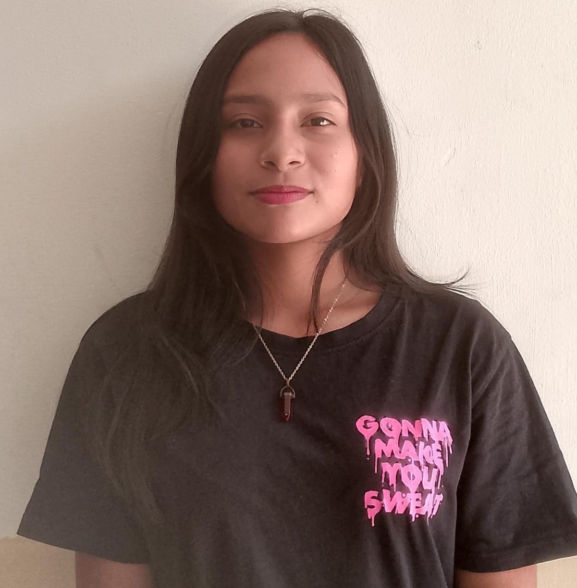
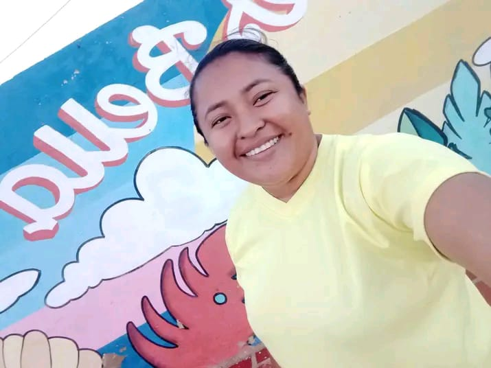
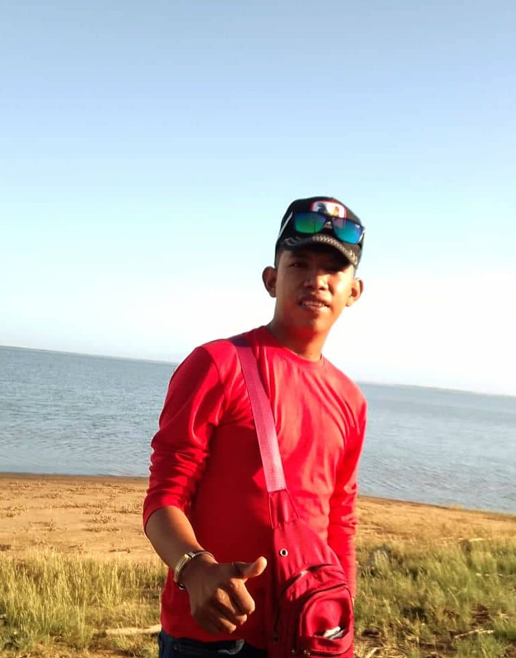
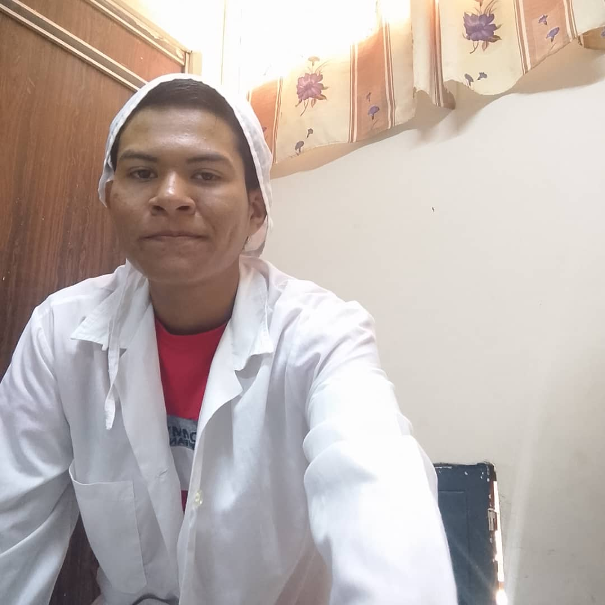
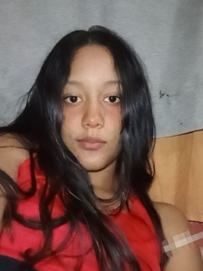
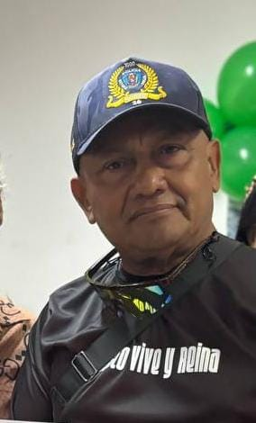
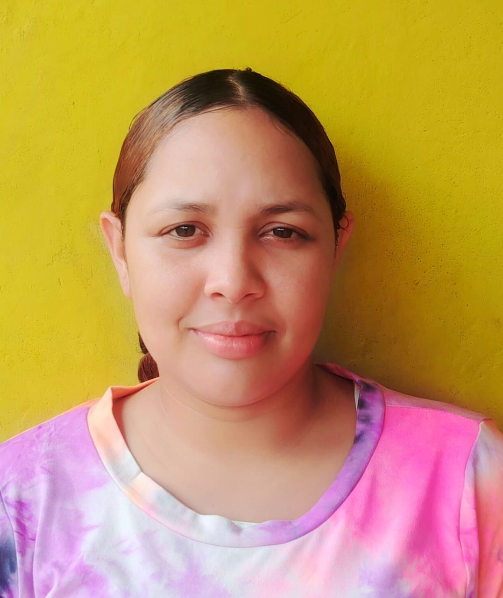

Espacios verdes en crecimiento
La práctica de la reforestación fortalece el entorno y la comunidad.
UPTMA · Maracaibo
Conoce el Plan Chuquisaca y explora nuestro mapa virtual con las especies arbóreas sembradas en la Universidad Politécnica Territorial de Maracaibo.
Árboles meta
Especies de la UPTMA
Autóctonas
Es un programa nacional de reforestación impulsado por el Gobierno de Venezuela que tiene como meta la siembra de 10 millones de árboles en todo el país, contribuyendo a la lucha contra el cambio climático y la recuperación de nuestros ecosistemas.
Siembra masiva a nivel nacional
Participación ciudadana activa
Impacto ambiental duradero
Restaurar los ecosistemas degradados y mitigar el cambio climático mediante la plantación de 10 millones de árboles autóctonos y endémicos a nivel nacional.
La restauración ecológica integral del territorio nacional mediante la meta de plantar 10 millones de árboles, integrando la ciencia, la soberanía alimentaria y la educación ambiental para mitigar los efectos del cambio climático.
Una mirada visual a la reforestación, la comunidad y el impacto ambiental que impulsa esta iniciativa.


Haz clic en los marcadores sobre el plano del campus para conocer la información de cada especie.
Mangifera indica
Árboles maduros de gran porte, copas redondeadas y densas. Son los principales reguladores térmicos del área, aunque presentan signos de estrés hídrico y heridas mecánicas en la corteza.
Cerca del edificio de Agroalimentación
Conoce el equipo multidisciplinario que hace posible el Plan Chuquisaca en la UPTMA

Detrás de cada árbol hay un equipo de estudiantes que trabaja con dedicación, creatividad y responsabilidad social para convertir ideas en acción real.
Desde la investigación, la organización y la coordinación del proyecto, cada integrante aporta una pieza clave para que el servicio comunitario sea posible y tenga impacto en la comunidad.
Desarrollo de herramientas y experiencia digital.
Diseño y mantenimiento de la plataforma web.
Implementación del mapa y visualización digital.
Producción de contenido y diseño interactivo.
Soporte técnico y automatización del proyecto.

Integración visual y experiencia del usuario.
Desarrollo y estructura de la sección digital.
UX, contenido y presentación del proyecto.
Enlace entre diseño y funcionalidad digital.
Apoyo en diseño, programación y contenido.

Comunicación y articulación con la comunidad.
Gestión del huerto y acompañamiento de siembras.

Monitoreo de especies y cuidado ambiental.

Coordinación de plantación y mantenimiento.

Seguimiento de viveros y prácticas sostenibles.
Apoyo en campo y orientación técnica.
Diagnóstico ambiental y registro del proyecto.

Apoyo operativo en áreas verdes.
Educación ambiental y trabajo comunitario.
Planeación de siembra y logística del proyecto.

Registro de especies y acompañamiento en campo.
Organización de actividades y seguimiento del plan.

Control de tiempos, recursos y logística.

Coordinación operativa y apoyo institucional.
Forma parte de esta iniciativa. Siembra un árbol, comparte conocimiento y ayuda a restaurar nuestros ecosistemas desde la UPTMA.